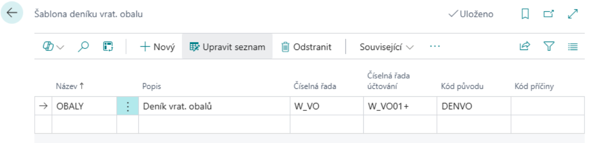

Vratné obaly - Nastavení
Aktualizace: 01.12.2024
Modul Evidence vratných obalů je rozšířením modulu Zásoby. Umožňuje sledování oběhu vratných obalů a paletového hospodářství. Lze pomocí něj sledovat obalová salda obchodních partnerů s vazbou na příslušné obchodní transakce (Nákup, Prodej, Příjem, Výdej, Transfer, Spotřeba a Výroba) a dále pak sledovat aktuální cenu obalů.
Pro správné fungování modulu vratné obaly, je nutné předem provést některá nastavení:
- Nastavit výpočtové vzorce
- Nastavit číselné řady
- Založit kategorie vratných obalů
- Založit šablony deníků vratných obalů
Nastavení výpočtových vzorců a číselných řad
- Vyberte ikonu
 , zadejte Nastavení vrat. obalů a poté vyberte související odkaz.
, zadejte Nastavení vrat. obalů a poté vyberte související odkaz. - Na stránce Nastavení vrat. obalů na záložce Obecné je nutné nastavit výpočtové vzorce.
Karta obecné obsahuje tyto pole:
- Vzorec data platnosti v prodeji – zadejte dobu, do kdy má zákazník povinnost vratný obal vrátit
- Vzorec data platnosti v nákupu – zadejte dobu, do kdy máte povinnost vratný obal vrátit dodavateli
- Bezpečná doba pro vrácení – tato funkce umožňuje nastavit dodatečnou lhůtu k základní lhůtě pro vrácení vratných obalů. Systém vás po uplynutí této "bezpečné doby" upozorní na obaly, které nebyly včas vráceny.
- Označit vrácení jako opravu
- Nevyrovnávat prodej. položky – pokud je tato volba aktivní, vypne se automatické vyrovnání položky vrat. obalu při dobropsání (prodej).
- Nevyrovnávat nákup. položky – pokud je tato volba aktivní, vypne se automatické vyrovnání položky vrat. obalu při dobropsání (nákup).
- Vyrovnávat dle plátce – volba nastavuje vyrovnávání položek vrat. obalů dle plátce uvedeného na prodejním dokladu. V případě, že tato volba není zaškrtnuta, provádí se vyrovnání dle zákazníka.
- Vyrovnávat dle věřitele – volba nastavuje vyrovnávání položek vrat. obalů dle věřitele uvedeného na nákupním dokladu. V případě, že tato volba není zaškrtnuta, provádí se vyrovnání dle dodavatele.
- Vyrovnávat dle zboží – volba nastavuje vyrovnávání položek vrat. obalů dle zboží, které je svázáno s daným vratným obalem. V případě, že tato volba není zaškrtnuta, provádí se vyrovnání dle vratného obalu
- Pro správnou funkci je též nutno nastavit na stránce Nastavení vrat. obalů na záložce Číslování číselnou řadu vratných obalů.
- V případě, že nemáte vytvořenou číselnou řadu pro vratné obaly, rozbalte řádek Čísla vrat. obalů klikněte na funkci Nový a vytvořte novou číselnou řadu.
- Zadejte Kód, Popis, Počáteční číslo a Poslední číslo číselné řady.
- Zaškrtněte políčko Výchozí čísla pro automatické vyplňování čísel při zadávaní nových požadavků.
Nastavení kategorií vratných obalů
Dalším krokem je nastavení kategorií vratných obalů. Kategorie vratných obalů slouží k filtraci v přehledových funkcích a tiskových sestavách.
- Vyberte ikonu , zadejte Kategorie vrat. obalů a poté vyberte související odkaz.
- Na stránce Kategorie vrat. obalů vyberte akci Nový a poté zadejte Kód a Popis.
Nastavení Šablon deníků vrat. obalů
Šablony deníků slouží k předpřipravení deníků pro účtování o vratných obalech (jedná se o obdobnou funkčnost jako šablony deníků zboží).
- Vyberte ikonu , zadejte Šablona deníku vrat. obalu a poté vyberte související odkaz.
- Na stránce Šablona deníku vrat. obalu vyberte akci Nový a poté zadejte Název, Popis, Číselná řada, Číselná řada účtování a Kód původu.

Nastavení karet vratných obalů
- Vyberte ikonu , zadejte Přehled vrat. obalů a poté vyberte související odkaz.
- Na stránce Přehled vrat. obalů vyberte akci Nový.
- Po vybrání akce Nový se otevře Karta vrat. obalu.
Každá Karta vratného obalu obsahuje tato pole:
- Číslo – zvolte číselnou řadu vratných obalů
- Popis – název vratného obalu
- Kód kategorie vrat. obalu – identifikace kategorie vratného obalu
- Vyhledávací popis
- Pohyb – needitovatelné pole s odkazem do tabulky „Položky vrat. obalu“. Zde zobrazená hodnota udává stav salda vratných obalů
- Vzorec data platnosti v prodeji – zadejte dobu, do kdy má zákazník povinnost vratný obal vrátit
- Vzorec data platnosti v nákupu – zadejte dobu, do kdy máte povinnost vratný obal vrátit dodavateli
- Uzavřeno – pole pro uzavření(zamezení) dalšího použití dané karty vratného obalu
Nastavené hodnoty mají v případě, že jsou vyplněny, přednost před obecným nastavením.
Z karty je dále možnost s pomocí akce Související zobrazit Položky vrat. obalu a Poznámky.
Viz také